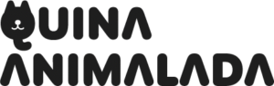
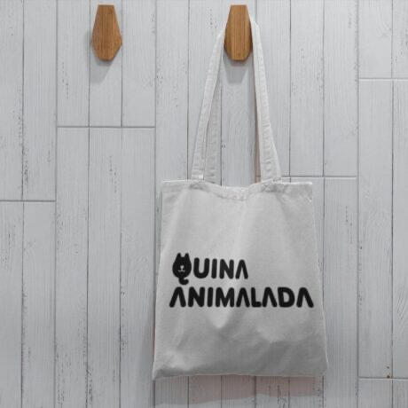
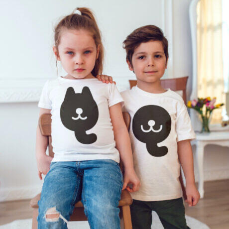
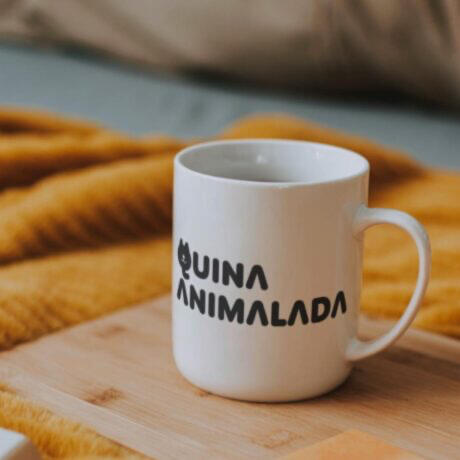
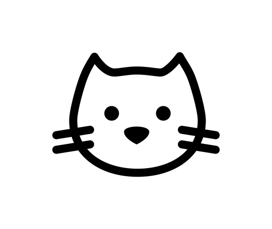
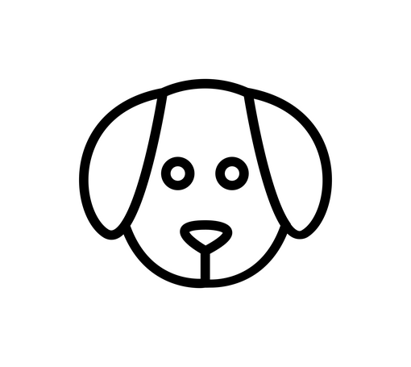
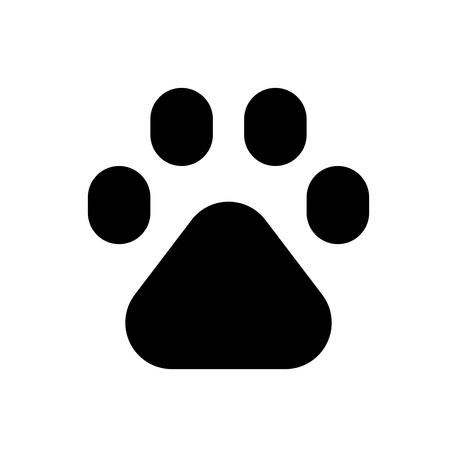

ASSOCIACIÓ ANIMALISTA DE SENCELLES
CONEIX-NOS
Quina Animalada és una associació animalista que lluita per la defensa i protecció dels drets dels animals, en qualsevol context i situació, apostant per una convivència sostenible i respectuosa entre els éssers vius de la terra.Som moltes les petites associacions que, en base a una necessitat, treiem urpes i ullals per aconseguir millores en les ordenances municipals dels nostres pobles. El 2014 a Sencelles teníem una ordenança molt pobre respecte protecció animal, així que ens vàrem constituyen com a Quina Animalada per a unir force i realitzar tasques de concienciació a CEIP Can Bril, així com benestar animal a l'Ajuntament. Es va iniciar, también, un conveni amb Baldea (Plataforma balear per a la defensa dels animals) i, en aquell any, es van realitzar més de cent castracions.Durant aquests anys, hem donat support a particulars i persones voluntàries que col·laboren desinteressadament ocupadot-se de colònies i acollida d'animals, presentació de denúncies per maltractament animal, legalització de les colònies del Punt verd de Sencelles i Biniali, centenars de difusions a Facebook d'animals perduts/trobats en el poble i zones pròximes, adopcions, acollides, etc.Gràcies a les trobades i esdeveniments que anem realitzant durant l'any, donacions de particulares i empreses, així com col·laboracions amb centres veterinaris, podem seguir endavant.
T'apuntes?
GALERIA
¿VOLS COL·LABORAR?
Productes
Podràs adquirir-los contactant amb nosaltres o quan realitzem algún esdeveniment.


voluntariat i acollida
Pots donar suport de diferents maneres: Ajudat en el manteniment, neteja i alimentació de les colónies de Biniali i Sencelles, acollides durant períodes de convalescència, acollida urgent quan trobem un animal i cerquem a la seva família, etc.
Aportacions
Vols aportar el teu granet d’arena?De vegades amb 1 euro és suficient
Mira les diferents opcions!Teaming, Bizum, transferènciaTambé pots donar productes o alimentació per a mascotes


Vull unirm-e al grup Teaming
Per 1 euro al mes o la quantitat que triïs.Uneix-te al grup!

Donació de productes i/o alimentació
Pots contactar amb nosaltres i acordarem la millor forma d’entrega per facilitar-te el donatiu.És útil quasevol producte per a mascotes: terra de moixos, menjar sec, en llauna, antiparasitaris, llits, casetes, etc.Si ja tenim stock, ho donarem a altres associacions amigues

Bizum o transferència
Bizum: t’avisarem quan tinguem aquesta opció disponible!Transferència al número de compte:
ES24 2056 0019 4310 0194 4923
© Dissenyat per O. Amengual i desenvolupat per AJRA